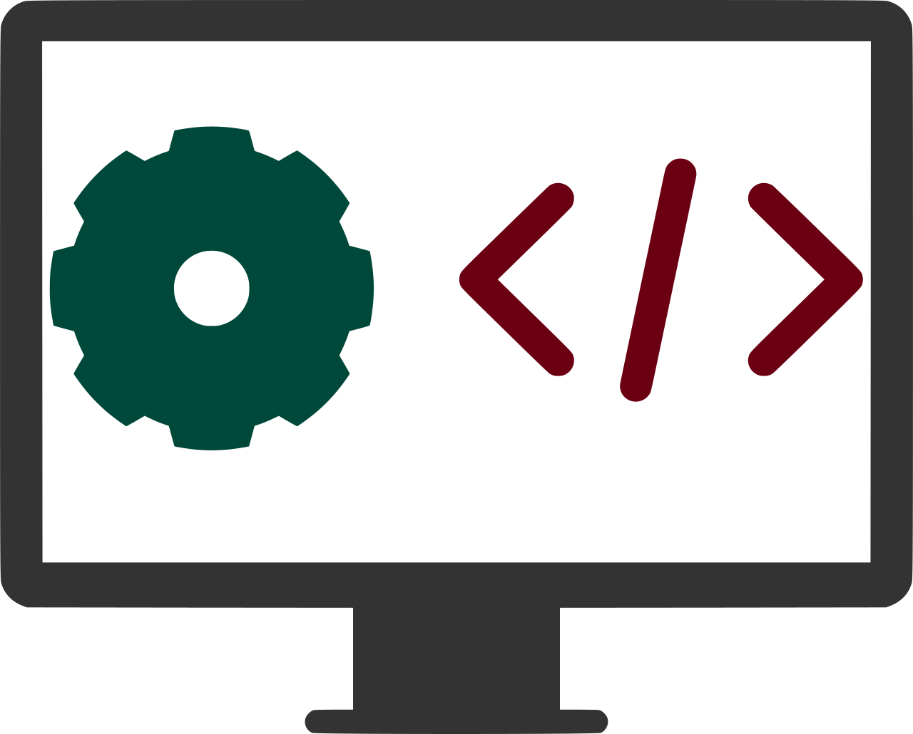
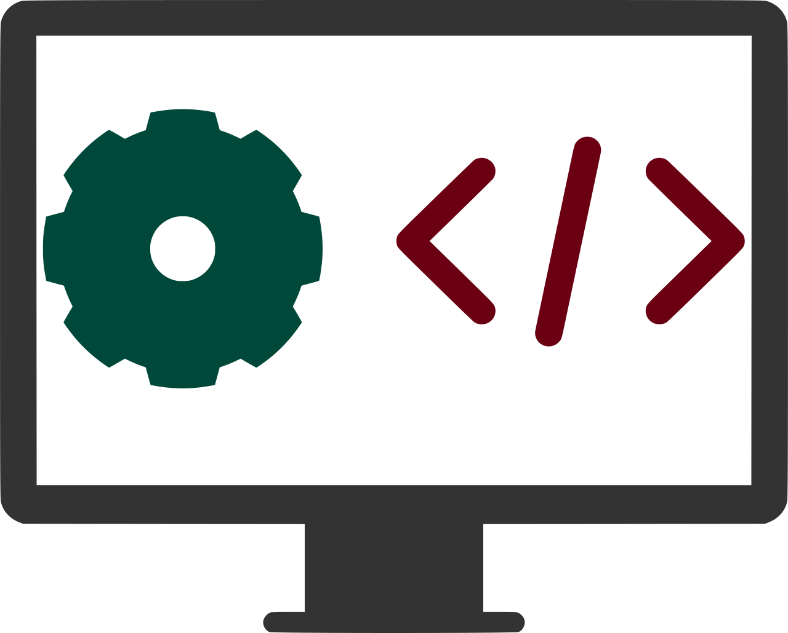

Text for our pages :
 by Pixabay
by Pixabay
You're the hero of the internet. You deserve the best protection
against cyber security threats, yet everyone seems to think you're "good enough."
Features section:
Ultimate protection - We protect you against all kinds of cyber threats including
malware and data breaches.
- Malware prevention - No more viruses, Trojans, or malware will be able to
sneak in through our tight security policies.
- Advanced web malware analysis - Our experts will find malicious code in your
website and suggest the best course of action for your safety.
- Training courses - We offer top-notch training courses to help you learn more
about new cyber threats and how to protect yourself from them.
We're a company that knows what developers need.
Our mission is to help you build better software and make the Internet a safer place. We can do
this in a variety of ways. First, we can provide penetration tests, security analysis and
architectural services. Next, we can train and consult with you on best practices for keeping
your digital assets safe. Finally, if something does go wrong, we have incident management
solutions that will help you fix things quickly.
We also provide a range of services related to web malware analysis, including publishing
papers and reports on emerging threats so that the rest of the industry can benefit from our
research.
A penetration test is the best way to identify vulnerabilities in
your system. It involves testing the system to see if it can be breached or compromised in any way.
The service can help you identify weaknesses in your system before they are exploited by attackers.
We can give you peace of mind knowing that your system is secure, and it can also help you improve
your security posture.
Since T-800 was founded in 2009, we have performed serveral of penetration test against all kinds
of application and online services. Our service inclued black-box penetration test, white-box test
and code audits. Many languages are used in programming and therefor we offer this service for many
of them. From languages as PHP, JavaScript, ActionScript, Java, Ruby, Python and Perl to c++ and Delphin.
We value thorough tests, human interaction and communication and a short yet to-the-point report.
If you are looking for a reliable and trustworthy source of security analysis and architectural
advice, look no further than our team of experts. We have years of experience in the industry
and are always up-to-date with the latest trends and developments. We can help you to identify
and mitigate any potential security risks in your system. Contact us today for a free consultation.
An early security analysis, design help and architectural advice help more than a penetration test
close to the launch date.Getting professional security advice before the majority of code is written
often saves a lot of energy and helps especially young projects to focus on what they need to do
If you are looking for training and consulting in the security field, look no further than
our web. We offer comprehensive and up-to-date training that will prepare you for the challenges
of today's digital world. Our courses are designed to give you the skills and knowledge you need
to succeed in a variety of roles. Whether you are just starting out or looking to advance your
career, we have a course for you.
Our cources range from a day to a full week and are offered in German and English. We have helped many
businesses around the globe, for in instance in Germany, UK, Japan, USA and many more.
We train single individuals up to whole companies. Our trainings are known to be intense and a
fire-hose of knowledge. Every participants can take a handout after our trainings with examples, links
and more. To learn about course contents, get a preview to the training slides or ask for a quote please
contact us.
Security is serious business. We understand that every day. That's why we're endlessly committed
to providing the best incident management, web malware analysis, and hacked website services
for enterprise-level companies. We'll help you stay secure with our full suite of malware
prevention solutions and elite service teams. Protect your company from cyber threats by
getting a real-time analysis of your website. We can monitor, block and report any incidents
as they arise to make sure that you are always in control of your data
Further we can help you in making the backend a bit safer. T-800 has helped migrating millions
of user accounts to secure password storage and communicating security fixes to unwilling third-party
vendors. Our team has years of academic and industry experience in web malware analysis, code deobfuscation
and attack detection. We offer daily coverage, 24/7.
...
...
Our company was founded 2009. T-800 is a leading provider of web application security services.
We are dedicated to helping developers make their applications as secure as possible. We offer a range of
services, including penetration testing, training, consulting, malware analysis, and more.
We're a team of security experts who are dedicated to helping you make your web application more secure.
We've got over 10 years of experience in the field, and we've worked with some of the biggest names in tech.
From our headquarters in Berlin, we're ready to help you build a better web application.
We know how important it is to keep information safe online—and we want you to be able to do
that without having to lose sleep at night or spend all day worrying about hackers getting their
hands on your data. That's why we provide peace of mind by putting an end to cyber crime before it can
happen!
Business location:
Bielefelder Str. 14 D-10709 Berlin
* Email: mail@t-800consulting.com
* Phone number: +4917683110797
* Twitter: @T-800consulting
 by
MuseScore
by
MuseScore
...
t-800consulting.com
 

 by
Todd Dailey
by
Todd Dailey